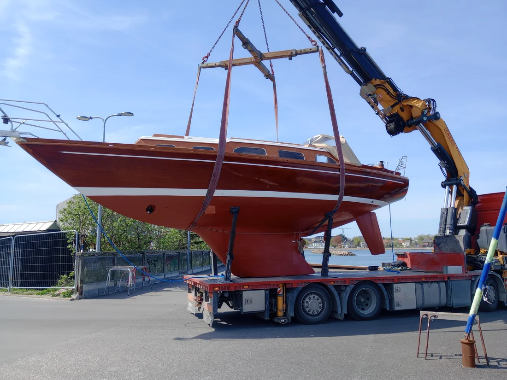
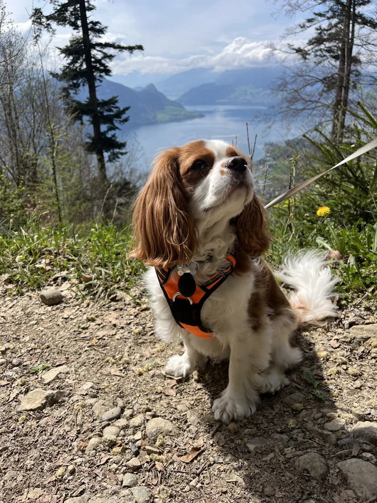
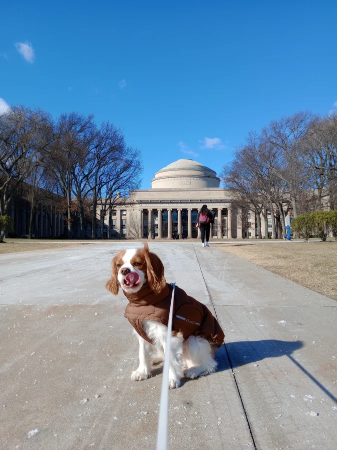
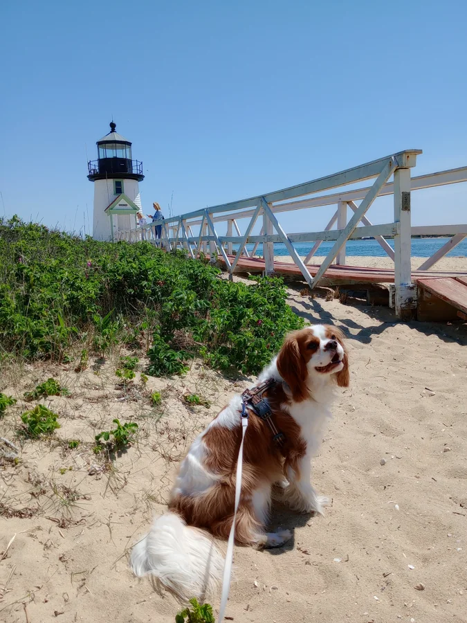
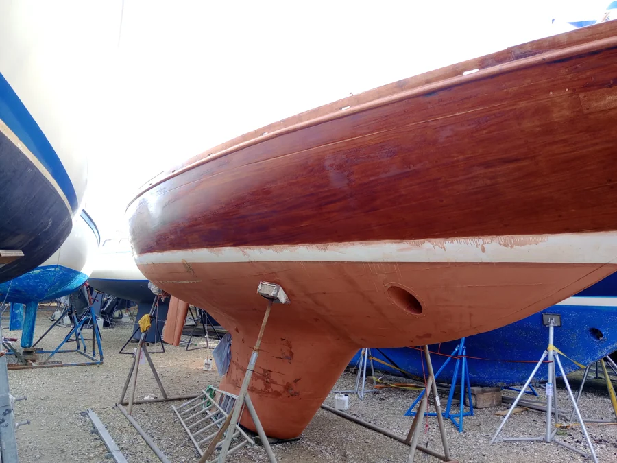

A little beyond the office.
In my spare time, I enjoy sailing, traveling, and long walks with my dog, Winston.
A boat with a story.
A few years ago, my brother and I bought a 33-foot Danish-built Bianca from 1967, made of mahogany and oak.
We bought it to go sailing, but much of our time went into restoring and repairing it: replacing old varnish, fixing the hull, and working on the rudder.
Unfortunately, the rudder later broke off after contact with a rock on the seafloor, and the boat was a total loss. We no longer have it, but these photos are a reminder of the time we spent bringing it back to life.


Meet Winston.
Whether it’s a long walk or a trip somewhere new, Winston is often along for the adventure.
Here are a few moments from our travels, including time in Cambridge, Massachusetts.


